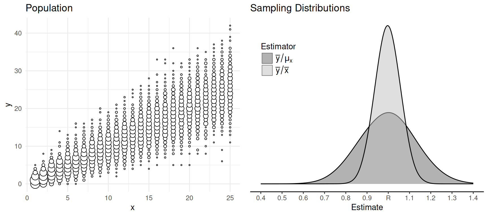
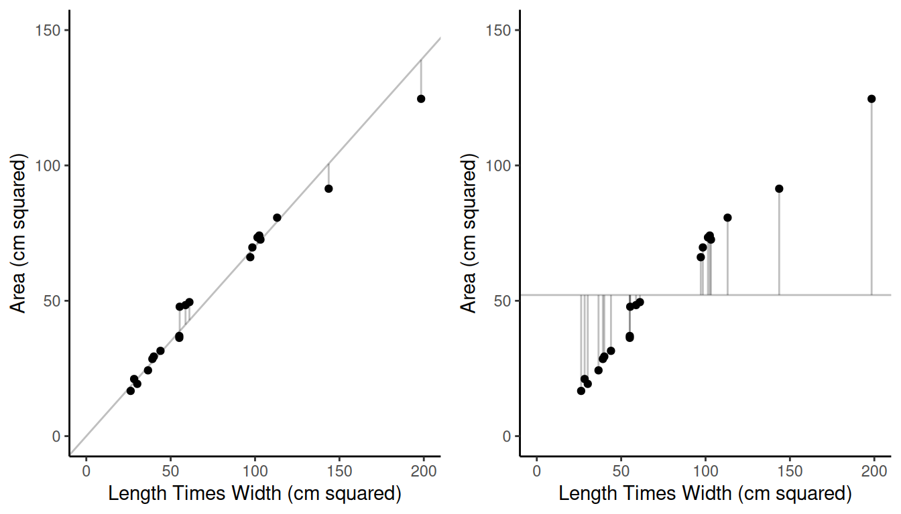
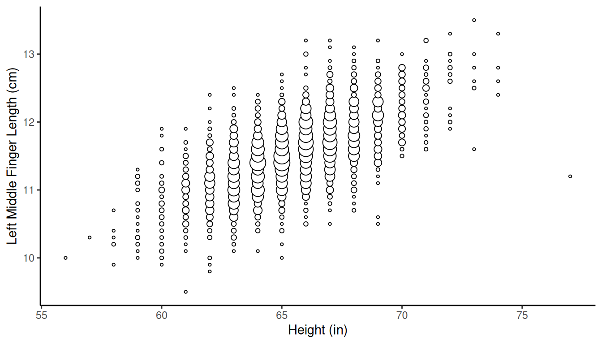
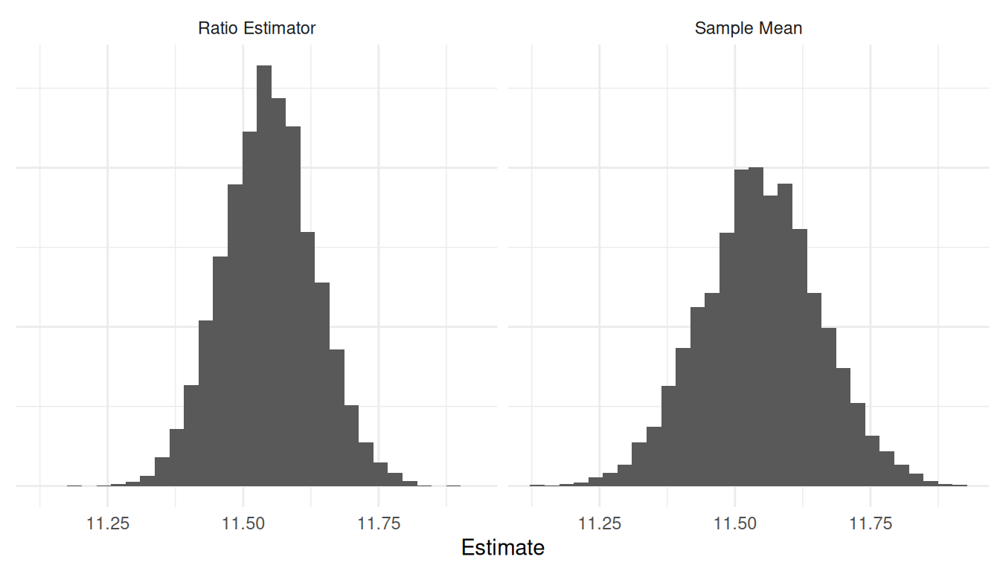
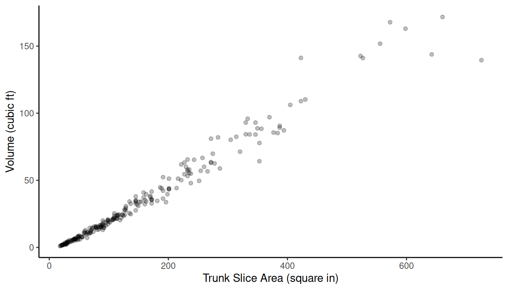
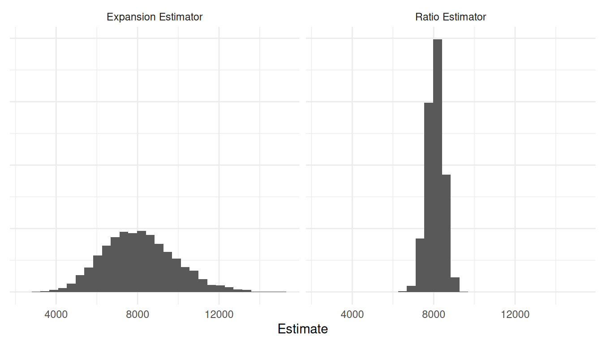

You can also download a PDF copy of this lecture.
Consider two estimators of \(R = \tau_y/\tau_x\): \[ r = \bar{y}/\bar{x} \ \ \ \text{and} \ \ \ r' = \bar{y}/\mu_x. \] The latter would be an option if \(\mu_x\) is known.
Example: Consider the problem of estimating the density of larkspur in a region, where \(y_i\) is the number of larkspur in the \(i\)-th plot, and \(x_i\) is the area of the \(i\)-th plot. Here \(\mu_x\) is the mean area of all plots. We may know this.
Example: Consider the problem of estimating the number of televisions per household in a city, where \(y_i\) is the number of televisions owned by households in the \(i\)-th block, and \(x_i\) is the number of households in the \(i\)-th block. Here \(\tau_x\) is the total number of households in the city, so \(\mu_x = \tau_x/N\). We may know this.
Which estimator should we use? Under simple random sampling the
estimated variances of these estimators are \[
\hat{V}(\bar{y}/\bar{x}) = \frac{1}{\mu_x^2}\left(1 -
\frac{n}{N}\right)\frac{s_r^2}{n} \ \ \ \text{and} \ \ \
\hat{V}(\bar{y}/\mu_x) = \frac{1}{\mu_x^2}\left(1 -
\frac{n}{N}\right)\frac{s^2}{n},
\] where \[
s_r^2 = \frac{1}{n-1}\sum_{i \in \mathcal{S}}(y_i - rx_i)^2 \ \ \
\text{and} \ \ \
s^2 = \frac{1}{n-1}\sum_{i \in \mathcal{S}}(y_i - \bar{y})^2,
\]
so the (estimated) relative efficiency depends only on \(s_r^2\) and \(s^2\).

An auxiliary variable is a variable (\(x_i\)) that varies over elements or sampling units. Auxiliary variables can be used in a variety of ways.
Two common uses of auxiliary variables:
For example, stratified random sampling uses an auxiliary variable for stratification, and post-stratification uses an auxiliary variable (i.e., the strata membership) in the estimator. Ratio estimators are an example of using an auxiliary variable in an estimator.
Consider that for a simple random sampling design \[ \frac{\mu_y}{\mu_x} \approx \frac{\bar{y}}{\bar{x}} \Rightarrow \mu_y \approx \frac{\bar{y}}{\bar{x}}\mu_x, \] so we could define an estimator of \(\mu_y\) as \[ \hat\mu_y = \frac{\bar{y}}{\bar{x}}\mu_x. \] Multiplying this estimator would give us an estimator of \(\tau_y\) since \(\tau_y = N\mu_y\), so that would be \[ \hat\tau_y = \frac{\bar{y}}{\bar{x}}\tau_x. \] The ratio estimators of \(\tau_y\) and \(\mu_y\) for a simple random sampling design are \[ \hat\tau_y = \frac{\bar{y}}{\bar{x}}\tau_x \ \ \ \ \ \text{and} \ \ \ \ \ \hat\mu_y = \frac{\bar{y}}{\bar{x}}\mu_x, \] respectively, where \(y\) denotes the target variable and \(x\) denotes an auxiliary variable. These are alternatives to the estimators, \[ \hat\tau_y = N\bar{y} \ \ \ \ \ \text{and} \ \ \ \ \ \hat\mu_y = \bar{y}, \] which do not use an auxiliary variable.
Note: There is a connection between a ratio estimator and the estimator of a ratio (\(r = \bar{y}/\bar{x}\)) since we can write the ratio estimators as \(\hat\mu_y = r\mu_x\) and \(\hat\tau_y = r\tau_x\).
Example: Consider a survey to estimate the proportion of households with televisions in Des Moines, Iowa, in 1951. The sampling units are blocks of households, selected using simple random sampling from a population of \(N\) = 9460 blocks.
| block | tv | households |
|---|---|---|
| 1 | 1 | 3 |
| 2 | 0 | 8 |
| 3 | 1 | 8 |
| 4 | 0 | 7 |
| 5 | 4 | 7 |
| \(\vdots\) | \(\vdots\) | \(\vdots\) |
| 132 | 2 | 4 |
Let \(y_i\) and \(x_i\) denote the number of televisions and the number of households, respectively, for the \(i\)-th block. We can compute \(\bar{y} \approx\) 1.8 and \(\bar{x} \approx\) 5.23. We also know that the total number of households for all 9460 blocks is \(\tau_x\) = 46296. What are our estimates of the total number of televisions in Des Moines using the two estimators we have?
Example: The area of each of 744 leaves from a shining gum (Eucalyptus nitens) was crudely approximated by multiplying leaf length and width. The area of each leaf of a simple random sample of 20 leaves was measured accurately.| \(i\) | Area | Length \(\times\) Width |
|---|---|---|
| 1 | 80.7 | 113.08 |
| 2 | 69.7 | 98.4 |
| 3 | 66.1 | 97.17 |
| 4 | 124.6 | 198.4 |
| 5 | 72.6 | 103.2 |
| \(\vdots\) | \(\vdots\) | \(\vdots\) |
| 20 | 29.4 | 40 |
The mean crude area approximation of all 744 leaves was 76.97 square cm. For the sample of 20 leaves, the mean of the accurate area measurements was 52.12 square cm, and the mean of the crude area measurements was 74.39 square cm. What is the estimate of the mean area of all the leaves using the two estimators?
We have two estimators of \(\mu_y\) and two estimators of \(\tau_y\) under simple random sampling. How do they compare?
Let \(\mu_y = \mu_x\bar{y}/\bar{x}\) be the ratio estimator of \(\mu_y\). Under simple random sampling, the estimated variance of \(\hat\mu_y\) is \[ \hat{V}(\hat\mu_y) = \left(1 - \frac{n}{N}\right)\frac{s_r^2}{n} \ \ \ \text{where} \ \ \ s_r^2 = \frac{\sum_{i \in \mathcal{S}} (y_i - rx_i)^2}{n-1}, \] where \(r = \bar{y}/\bar{x}\). Note that the estimated variance of \(\mu_y\) is very close related to that of \(r\). This isn’t surprising since we can write the ratio estimator as \(\hat\mu_y = r\mu_x\). The \(\mu_x\) cancels out the term \(1/\mu_x^2\) in the variance of \(r\) to create the variance of \(\mu_y\).
Example: Recall the survey of shining gum leaves. We have that \(\sum_{i \in \mathcal{S}}(y_i - rx_i)^2 \approx\) 509.33. What is the bound on the error of estimation of the ratio estimator of the mean leaf area?
Let \(\hat\tau_y = \tau_x\bar{x}/\bar{y}\) be the ratio estimator of \(\tau_y\) under simple random sampling. The estimated variance of \(\hat\tau_y\) is \[ \hat{V}(\hat\tau_y) = N^2\left(1 - \frac{n}{N}\right)\frac{s_r^2}{n} \ \ \ \text{where} \ \ \ s_r^2 = \frac{\sum_{i \in \mathcal{S}} (y_i - rx_i)^2}{n-1}, \] where \(r = \bar{y}/\bar{x}\).
Example: Recall the television survey. There \(\sum_{i \in \mathcal{S}}(y_i - rx_i)^2 \approx\) 210.63. What is the bound on the error of estimation for the ratio estimator for the total number of televisions?
Under simple random sampling the estimator \(\hat\mu_y = \bar{y}\) has the (estimated) variance \[ \hat{V}(\hat\mu_y) = \left(1 - \frac{n}{N}\right)\frac{s^2}{n} \ \ \ \text{where} \ \ \ s^2 = \frac{\sum_{i \in \mathcal{S}} (y_i - \bar{y})^2}{n-1}, \] while the ratio estimator \(\hat\mu_y = \mu_x\bar{y}/\bar{x}\) has an (estimated) variance of \[ \hat{V}(\hat\mu_y) = \left(1 - \frac{n}{N}\right)\frac{s_r^2}{n} \ \ \ \text{where} \ \ \ s_r^2 = \frac{\sum_{i \in \mathcal{S}} (y_i - rx_i)^2}{n-1}. \] The (estimated) relative efficiency of the ratio estimator when compared to \(\bar{y}\) is \[ \frac{\hat{V}(\bar{y})}{\hat{V}(\mu_x\bar{y}/\bar{x})} = \frac{\sum_{i \in \mathcal{S}} (y_i - \bar{y})^2}{\sum_{i \in \mathcal{S}} (y_i - rx_i)^2}. \] So a relative efficiency greater than one favors the ratio estimator, whereas a relative efficiency less than one favors \(\bar{y}\).
Note: We can also compute an effective sample size of the ratio estimator (relative to \(\bar{y}\)) as the sample size times the relative efficiency.
Example: Recall the survey of leaf area. We have \(\sum_{i \in \mathcal{S}}(y_i - rx_i)^2 \approx\) 509.33 and \(\sum_{i \in \mathcal{S}}(y_i - \bar{y})^2 \approx\) 15558.43. This gives us a relative efficiency of approximately 30.55.

Example: Consider the observations of a target variable (left middle finger length) and an auxiliary variable (height) for a population of 3000 elements.  Let’s simulate the sampling distributions of two estimators of \(\mu_y\) under simple random sampling with \(n\) = 25: the sample mean \(\bar{y}\) and the ratio estimator \(\mu_x\bar{y}/\bar{x}\). Note that the value of \(\mu_y\) is approximately 11.55 cm.  We have \(\hat{V}(\bar{y}) \approx\) 0.012 and \(\hat{V}(\mu_x\bar{y}/\bar{x}) \approx\) 0.007.
Example: Consider a population of red oaks.  Let’s simulate the sampling distributions of two estimators of \(\tau_y\) under simple random sampling with \(n\) = 20: the estimator \(N\bar{y}\) (i.e., the “expansion estimator”) and the ratio estimator \(\tau_x\bar{y}/\bar{x}\). Note that the value of \(\tau_y\) is 8124.9 cubic feet.  We have \(\hat{V}(N\bar{y}) \approx\) 3113433 and \(\hat{V}(\tau_x\bar{y}/\bar{x}) \approx\) 160054.2.
Question: Could the ratio estimator for \(\tau_y\) or \(\mu_y\) have a larger variance than the “non-ratio” estimators \(\hat\tau_y = N\bar{y}\) and \(\hat\mu_y = \bar{y}\), respectively, and thus lower relative efficiency? When would this happen?
One estimator of \(\tau_y\) under simple random sampling is \[ \hat\tau_y = N\bar{y}, \] which is clearly useless if \(N\) is unknown. But we could use the ratio estimator \[ \hat\tau_y = \frac{\bar{y}}{\bar{x}}\tau_x, \] if we know \(\tau_x\). Recall that \(\tau_x = \sum_{i=1}^N x_i\). So one way to compute \(\tau_x\) is to get \(x_i\) for all elements in the population, but if we could do that we’d know \(N\). But in some cases there are other ways to find \(\tau_x\).
Example: Suppose we have a load of an unknown number of oranges. Let \(y_i\) be the sugar content of the \(i\)-th orange and let \(x_i\) be the weight of the \(i\)-th orange. The ratio estimator of the total sugar content of the load of oranges (assuming a simple random sampling design) is \[ \hat\tau_y = \frac{\bar{y}}{\bar{x}}\tau_x, \] where \(\tau_x\) is the total weight of all the oranges in the load.
Example: The following data are from hauls of Ventura Marsh, Iowa, in October of 1953 for Northern Pike (Esox lucius) after 1146 pike had been caught, tagged, and released.| Haul | Catch | Tagged |
|---|---|---|
| 1 | 493 | 11 |
| 2 | 1584 | 57 |
| 3 | 1275 | 80 |
| 4 | 1488 | 60 |
| 5 | 1070 | 32 |
| \(\vdots\) | \(\vdots\) | \(\vdots\) |
| 16 | 331 | 10 |
The mean catch size was 949.69 pike and the mean number of tagged pike per haul was 37.25. If we regard these hauls as a sample from a simple random sampling design, then an estimate of the total number of Northern Pike is \[ \hat\tau_y = \frac{\bar{y}}{\bar{x}}\tau_x, \] where \(\bar{y}\) and \(\bar{x}\) are the average number of caught and tagged fish in the sample of hauls, respectively, and \(\tau_x\) is the total number of tagged fish.
In the context of a simple random sampling design, what two advantages do we see for ratio estimators relative to the estimators that do not use an auxiliary variable?